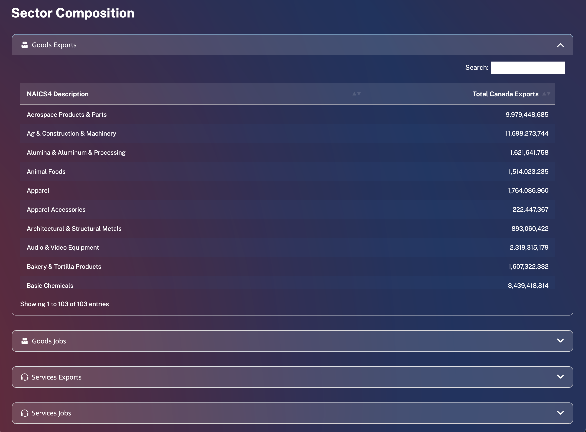

The data existed. Finding it was the problem.
In early 2025, tariffs stopped being a hypothetical. Canada's policy teams needed answers fast: which U.S. lawmakers represent districts with real economic ties to Canada? Not which states. Which individual districts. Targeted outreach works. Blanket messaging to all 435 offices does not.
The problem: the U.S. only publishes trade data at the state level. CCC's Business Data Lab had built something genuinely new, an allocation model that broke those numbers down by congressional district using industry employment, GDP proxies, and geographic weights. My job was to turn that model into something a diplomat could actually open.
The allocation model was genuinely new territory. Nobody had broken state-level trade data down to the congressional district before. This was the first time those numbers existed at that resolution.
Make Canadian trade exposure readable at the district level, fast enough to access before walking into a meeting.

Everyone had the data.
Nobody had the interface.
A diplomat in a meeting knows Canada matters to the district across the table. They cannot prove it. The data exists at the state level, inaccessible when it is needed most.
Every briefing required the same manual process: source the data, rebuild the chart, reformat the presentation. Hours of work to answer a question that should take seconds.
No way to rank or compare districts. Without that, prioritization was not possible. When a trade vote is 48 hours away, the absence of reliable data is itself a liability.
These were not separate problems. They were the same problem taking different forms. Everyone was working around the absence of a shared tool for district-level data. Once that became clear, the direction of the project became clear as well. That is exactly what I set out to build.
The raw data everyone was manually working with. No shared format. No shared tool.
Three audiences.
Three very different questions.
I had a handful of conversations with stakeholders and economists on the team. The sessions were brief, but they were pointed. Everyone was working from the same underlying data. What differed was what each person actually needed to do with it.
"I need to know which district is most exposed to Canadian steel before Thursday. I am meeting with their chief of staff and I need a single figure I can reference."
Needs: Fast lookup, one clear number, an exportable brief."Every time I need a district-level argument I end up rebuilding the allocation model from scratch. That is a full day of work. The pace of a news cycle does not allow for it."
Needs: Ranked lists, sectoral breakdown, comparison tools."Before I cite anything, I need to understand how this number was built. What are the assumptions? Where does the confidence break down? I can't put my name on a report if I can't answer that."
Needs: Data provenance, confidence intervals, download access."The hardest design problem wasn't the map. It was figuring out what to show on it before anyone clicked anything."
What the tool shows before anyone interacts with it matters most. If the map opens blank, a diplomat has nothing to work with. If it opens pre-loaded with the most trade-exposed districts, sorted by sector, they can start drawing conclusions before they have searched for anything.
The first version asked
too much upfront.
The early model was built around dropdowns. State, district, product type, breakdown, filter by value. Five decisions before anything appeared on screen. It worked technically. But it put the burden on the user to already know what they were looking for before the tool had shown them anything.
There was also a structural problem: the right panel had a "Breakdown by" filter to toggle between Jobs and Export. One view at a time. If you needed both numbers in the same conversation, you had to switch and hold the first figure in your head while you looked for the second.
Early model. The map was secondary to the filters. Jobs lived in a separate tab on the right.
I flipped the model. Map first, then state, then district. Jobs and exports are shown side by side in the panel — no toggle. Sector detail expands on demand.

The revised IA. Map-first navigation, progressive disclosure from national to district to sector detail.
How I designed for speed
and made the hard calls.
Everyone I talked to scanned before they read. They were looking for one number to orient around, quickly. So I kept the layout high contrast, the hierarchy clear, and the spacing generous. Easy to read at a glance.
Goods and services are always side by side. A district that ships the most in raw volume tells one story. A district where 60% of all exports go to Canada tells a completely different one. Both matter, so both are visible at once.


In use internally.
Waiting for the right moment publicly.
The tool is live and being used by internal team members across the policy department, BDL, and some stakeholders outside of our organization. People are actively pulling district data before meetings and advocacy calls. The 2025 trade data has been integrated, so the numbers reflect current conditions.
A public release is still on hold. Canada-U.S. trade is an active and sensitive file right now, and the timing of something like this matters. When the moment is right, it is ready to go.
Congressional districts, all fully mapped and queryable in the final system.
Trade data updated to reflect current figures. The tool stays relevant as conditions change.
Teams and stakeholders actively using it: policy department, BDL, and external partners.
What this project
taught me.
Designing for people under time pressure is different. The users of this tool are preparing for real conversations where the numbers they cite carry weight. Speed and clarity are not extras. They are the whole job.
Knowing the data turned out to be part of the design work. I removed features the model could not honestly support, even when they looked good on screen. That was a harder call than any visual decision I made on this project.
I also learned that timing is its own design consideration. A tool can be well-built and still need to wait for the right moment. That is fine.